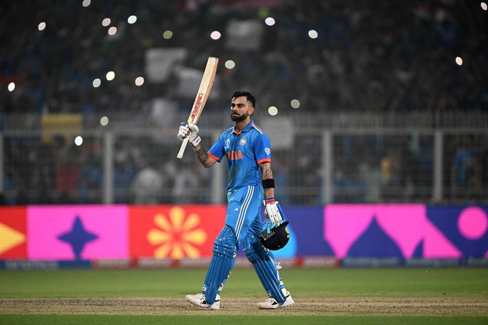

India vs South Africa
Kohli ton, Jadeja five-fer flatten South Africa
King Virat Kohli on his birthday joined Legend Sachin Tendulkar at the top of the ODI centurions list as India posted 326 and then had another head from their five-fanged bowling attack bury South Africa under this mountain of runs.
Ravindra Jadeja waved the spin flag with gusto, finishing with 5 for 33 in a dominating 243-run win for the hosts which assures them of a top of the league standings finish for a second straight World Cup.
Venue: Eden Gardens Stadium, Kolkata
- India won the toss and opt to bat
- Rohit and Gill had an 50 run opening stand.
- After the dismissal of Gill(23), Rohit(40) and kohli(101*) had a good partnership.
- Meanwhile South African bowlers managed to get continuos breakthroughs, but Kohli Stood against them.
- At last with an unbeaten century by Kohli India managed to get a big total.
- In the chase SA had a no clue to score runs.
- All went to the dressing rooms one by one.
- First time in this tournament SA didn't scored a single six in their iniings.
- India finished the match very quickly.
Scores:
IND - 326/5 (50 overs)
SA - 83 (27.1 overs)
Player of the Match : Virat Kohli

Copyright @ ICC Cricket World Cup 2023 Blog